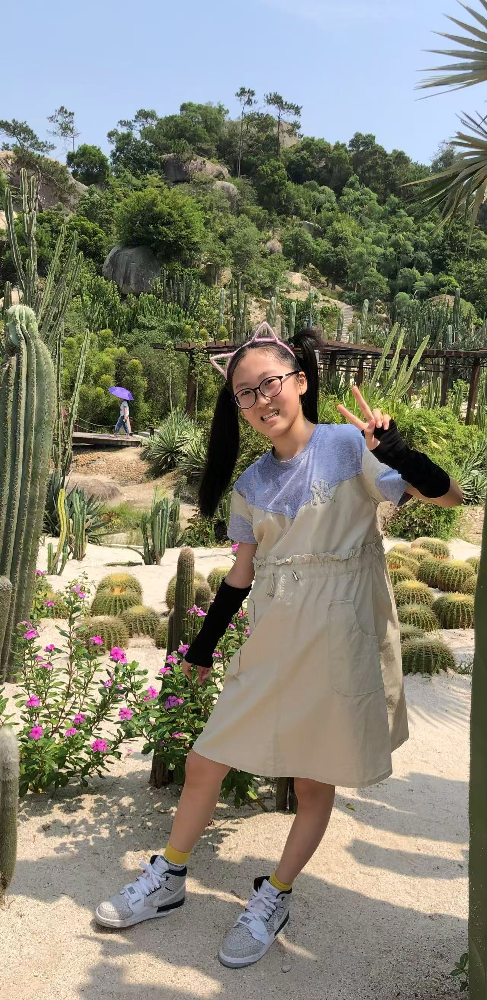
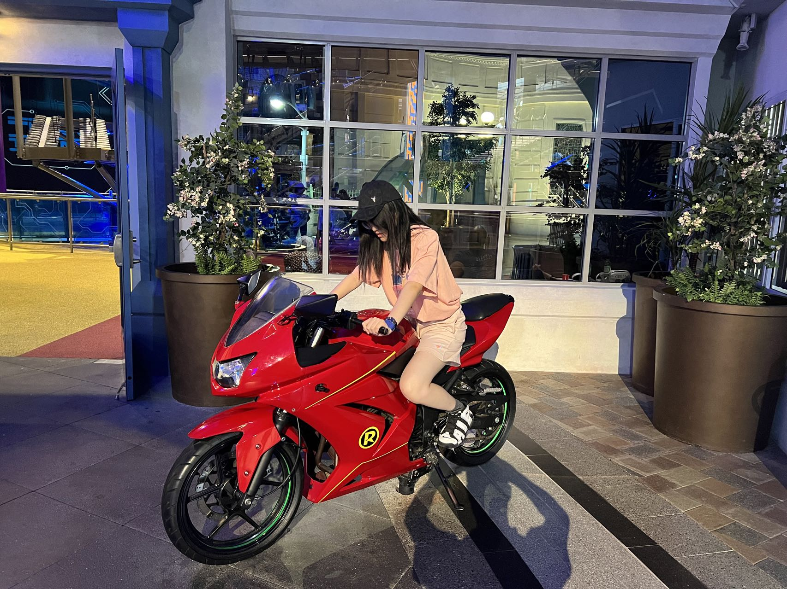
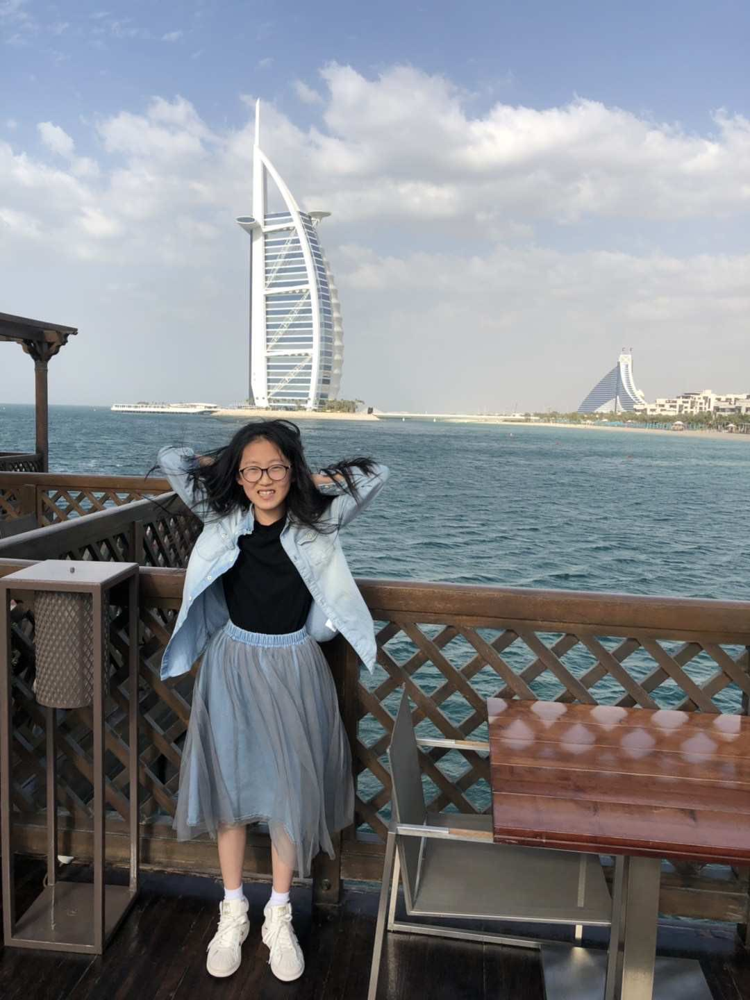

旅行信息
演唱会时间
2025年7月6日 晚上19:00
演出地点
北京市国家体育场·鸟巢
出发地
杭州
交通方式
乘坐飞机前往北京
行程安排推荐
7月5日
抵达北京 & 自由活动
从杭州出发，抵达北京首都国际机场，乘坐机场快线前往市区。入住预定酒店后，自由活动，推荐前往三里屯感受北京夜生活。
7月6日
文化探索 & JJ演唱会
上午参观中国国家博物馆，感受中华五千年文化。下午在前门大街品尝地道北京小吃。晚上18:00前往鸟巢，参加林俊杰JJ20演唱会！
7月7日
城市打卡 & 返程
上午在798艺术区拍照留念，中午在簋街享受最后的北京美食。下午整理行装，带着满满的回忆前往机场，返回杭州。
必游景点
三里屯太古里
北京的潮流中心，时尚达人聚集地，夜晚灯火辉煌，是拍照打卡的绝佳地点。
前门大街 & 胡同
体验老北京风情，穿梭于胡同之间，感受历史与现代的交融。
中国国家博物馆
了解中华文明的宝库，馆藏丰富，是文化爱好者的必游之地。
798艺术区
旧工厂改造的艺术天堂，充满创意和设计感，是文艺青年的聚集地。
美食推荐
簋街夜市
北京最著名的美食街，24小时营业，麻辣小龙虾、烤串等地道美食应有尽有。
大董烤鸭
创新与传统结合的北京烤鸭，环境优雅，是体验高级北京菜的理想选择。
海底捞火锅
不只是火锅，更是一种服务体验，适合朋友聚会，享受互动的乐趣。
护国寺小吃
体验地道的老北京小吃，豆汁、焦圈、驴打滚等传统美食一网打尽。
酒店推荐
北京东直门亚朵酒店
距离地铁站仅300米，有机场快线直达，设计风格现代舒适，性价比高。
三里屯CitizenM酒店
位于潮流中心三里屯，设计前卫，屋顶酒吧可俯瞰北京夜景，适合年轻人。
全季酒店（鸟巢店）
距离鸟巢仅1公里，步行可达，简约中式设计，提供安静舒适的住宿体验。
地图导航
JJ特别歌单

马亿亿和好友的青春合唱
特别为这次旅行定制的林俊杰歌单，包含经典歌曲和演唱会特别曲目
不为谁而作的歌
修炼爱情
她说
江南
可惜没如果
小酒窝
一千年以后
曹操
关键词
那些你很冒险的梦
青春纪念


